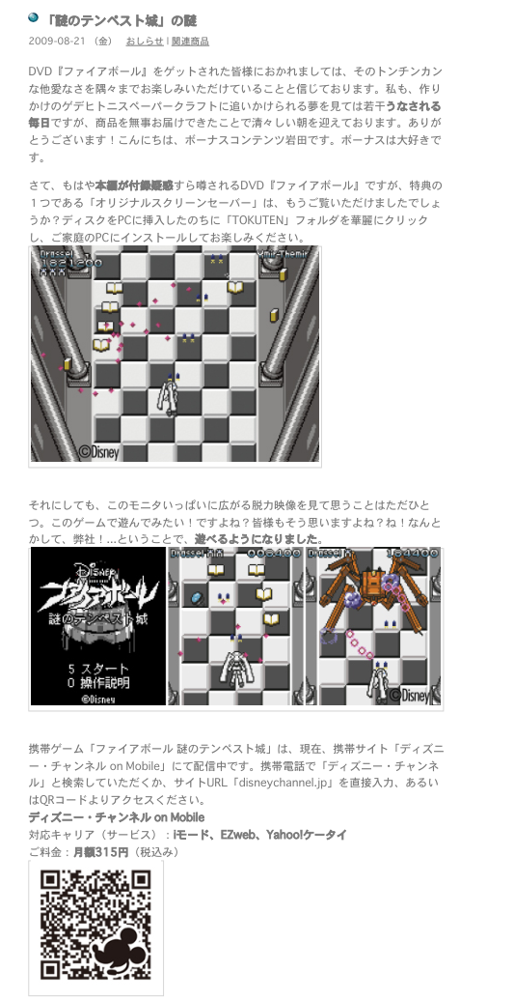
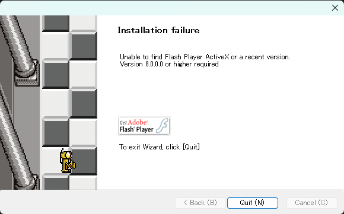
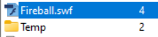
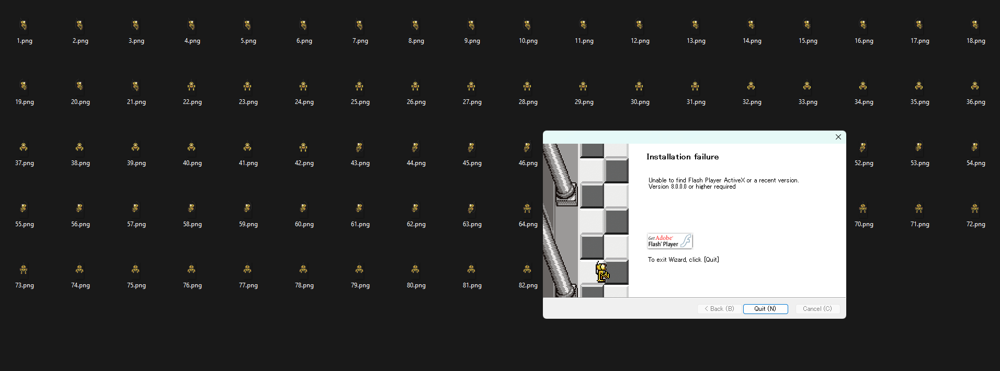

About Fireball
AN ORDINARY COMEDY ON AN ORDINARY PLANET.
A GIRL WITH VANITY and AN OLD MAN WITH LOYALTY. A LESSON IN NONHUMAN RELATIONSHIPS.
I don't know why I'm bothering to write a synopsis. I feel like anyone who would click on this already knows what Fireball is. I'll try to keep this short, I guess.
Fireball is a comedy about a young lady named Drossel von Flügel and her butler Gedächtnis. It aired on Disney Channel, in Japan, South Korea, and Russia (for whatever reason original English release fell through. What we could've had....), but there is an official English dub on Disney+. The show has, like, 20 minutes of runtime.
Fireball is *weird*. Both as a production and as a franchise. Imagine how goated it would be if it was a shonen with full 22 minutes episodes. Instead we only got about one episode's worth. I say that we have been robbed. But what is truly remarkable is how much merch and appearances Fireball has made for having such a limited runtime. I could make a whole post solely about these obscure items, but I'll pass (for now...).Chief among them, and object of this blog, there exists an obscure mobile game.
goods.pdf
This chapter's name was a file found on Fireball's website (which I highly recommend you visit to scroll through different instances over years!). It essentially contains every single Fireball product ever made and sold; if it's not in goods.pdf, it probably doesn't exist, or is somehow so ludicrously rare that it fell through the gaps. Whatever the case may be, This is one of very first entries on the pdf:

Right here! Clear as day! There is an official Fireball shoot-em-up, and I must play it, no matter the cost. A quick translation reveals that this game was available through an obscure Disney Channel mobile service, kind of like the Sonic Cafe games. The difference being I had literally never heard of Disney Channel one, and doubt any game (most important of all the Fireball one) had actually been backed up and survived throughout the years. Quickly enough, I accepted my fate and understood that this was simply not meant to be. Or so I thought.
ƒtƒ@ƒCƒAƒ{[ƒ‹.scr
Conveniently enough, fucking MIRACULOUSLY, Fireball DVD had a neat screensaver bonus if you loaded disc onto your PC. This is relevant because as far as I can tell it is literally just a port of the mobile game (they both look identical, if you take a look at the screenshot above. Anyways, I just so happened to have a DVD (multiple, in fact..)! But 1. It was sealed, and I didn't feel like opening it and 2. I don't have a DVD player that can connect to my PC! Lucky for me, a user on the Fireball Discord had already backed up the files. But for some reason, I couldn't get it to work? It just displayed a black screen. That made me sad and I gave up. By the way, yes, that is what the screensaver file is named. I don't know why.
Shitty HP AIO
About one week ago, I inherited a free shitty HP AIO. What made this one notable is that it had a functional DVD player. I immediately cracked open my least valuable Fireball DVD (for those curious, I elected to open the one included with the winter Drossel Figma. It would just spend its time in a box, anyways). And, my God, copying files took so fucking long. I don't want to talk about it. Nothing can prepare you for a truly shit HP AIO.
ScreenSaver.exe
This was the name of the screensaver installer for Windows. Don't remember the name of the Mac one, sorry! Not bothering with the AIO to find it again. I was overflowing with joy until I decided to boot the damn executable up:

Grief had overcome me. How could this be? How fucking hard can this get?? Turns out it wasn't actually that hard and I'm being dramatic for the blog. You simply need to download Adobe Flash for Internet Explorer (that's what the ActiveX part means, I think?). On Windows, you will need to activate compatibility mode to an older version of windows (I personally used Windows 7, your result may vary) otherwise the Flash installer won't work. After that, the installer should just work! Isn't that exciting. I actually had another issue where the screensaver stopped working after I closed the installer, but I deleted the SCR and reinstalled it and it worked fine. Maybe I got unlucky? Anyways, it works perfectly now. I'm using it while I'm writing this.
Intermission
Not that much of an intermission, as it turns out. This is still important to the grander story. Anyways, I just wanted to dedicate this chapter to this absolutely blessed piece of software. It is so simple and it works great. Does exactly what it sets out to do. Blazing fast. Just perfect. It's how I was able to extract the SWF file out of the SCR file (for some reason, EXE to SWF apps just split the SWF in two? Also, SCRs are basically just renamed EXEs, if you're wondering how I went from SCR to EXE.) since, as it turns out, all the SCR does is just load the SFW and store it in a temp folder. What is the name of the SFW, you may ask?
Fireball.sfw
I finally had the game. Or, at least, a shell of it. I used JPEXS Free Flash Decompiler. It was a lot of fun, and also very difficult. I assume this part isn't really interesting to anyone, so I will just post cool anecdotes:
-The game literally has a PlayerInput package. This fully convinced me that this is just a port of the mobile game (I wasn't sure until now, since I don't know if mobile games in 2009 really used ActiveX? I still don't know honestly, but why on Earth would this game have a PlayerInput package if they didn't????). All it does is read off pre-recorded inputs. I only had to do light editing to make it accept live inputs.
-There is a Destroy() function and a Destory() function within the code. The Destroy() function is defined in the O package, but doesn't do anything? Meanwhile the Destory() function works perfectly fine. Kind of awesome.
-This sfw is severely broken in Ruffle because the Smoke script does this.removeMovieClip(); which basically just nukes sprites until your game is a black void. I fixed it, which makes my code not faithful to the original sfw. Sorry.
-There is an invisible, unkillable enemy that shows up at some point in the game. This is not a bug, a look at the code reveals it is actually supposed to be Drossel's invisible maids. Very cute nod to the show. Very sadistic thing to put in a game.
-Originally, Drossel didn't have a health system, so I had to code that one from scratch as well. I sadly have no way to know what the mobile game hit and death animations look like. Did not bother syncing it up to the UI, sorry.
-There is absolutely no sound or music included within this game. I also don't have any way to know whether this was also true in the mobile game or no. Have you ever heard a screensaver make noise?
-The Schadenfreude on the installation wizard is just, not in the game? At no point does he ever look have his arms down and legs kicked up like that. Disturbing.
fireballmeowing.sfw
This is the name of my final SFW. Fully-featured and playable. It's actually quite challenging! I think it is worth playing at least once or twice. This also made me realize I would kinda love a full several hour Fireball shoot-em-up that is much more challenging than this. A girl can only hope, I suppose. If Disney were to contact me, I would help them make this game come true in a heartbeat. Ping me at loun.europa on the Fireball Discord if you run into any issues.